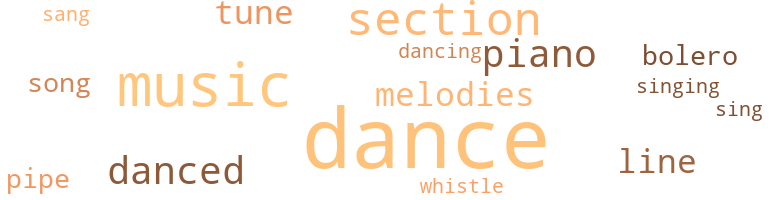
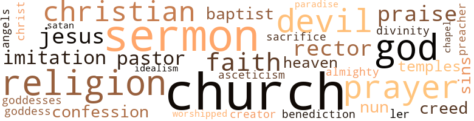

Black Paradise, by Hough, Florenze H. (1953)
71 music-related terms matched in this text.
Most frequent terms in this topic: dance (20); music (11); section (6); dances (5); danced (4)
bolero.n.01
Definition: music written in the rhythm of the bolero dance
| word | sentence |
|---|---|
| bolero | Clomaine wore a bolero pajama suit of shantung in pastel shades of white , which reflected the Basque influence ; her trousers were made to flare in Spanish fashion ; the insets of these were Vermillion , as were her gold-tassled sash and gold-embroidered bolero jacket . |
| bolero | Clomaine wore a bolero pajama suit of shantung in pastel shades of white , which reflected the Basque influence ; her trousers were made to flare in Spanish fashion ; the insets of these were Vermillion , as were her gold-tassled sash and gold-embroidered bolero jacket . |
dance.n.01
Definition: an artistic form of nonverbal communication
| word | sentence |
|---|---|
| dance | Suddenly his eyes caught a glimpse of a newspaper which carried an article on the recent dinner dance he and Clomaine had given . |
| dance | They returned just in time to enjoy the last dance . |
| dance | No , you do n't give a damn what I do so long as you can hold receptions and go to parties and dance in the arms of other men . |
| dance | Same thing I mentioned at the dance last week . |
| dances | They danced several dances before they dressed again . |
| dance | After the school session was over , she remained in the city for a few days , and finally decided to attend the dance and reception given at the Young Women 's Christian Association in honor of out-of-town visitors . |
| dance | Clomaine and Arline attended the Y.W.C.A. reception and dance , and there met a few old friends and acquaintances and many visiting guests . |
| dances | They danced several dances together , and Clomaine consented to see him after the dance . |
| dance | They danced several dances together , and Clomaine consented to see him after the dance . |
| dance | Like Clomaine , he attended the dance at the Y.W.C.A. merely to pass the time away ; like Clomaine , he became interested in one person there . |
| dance | His mind reflected back to a recent dinner dance . |
| dance | Clomaine did not miss a single dance . |
| dances | He took her to occasional dances - not too often though - - and to parties of friends who were brave enough to have the apartments their meager salaries could not afford . |
| dance | Raymond and Clomaine were together for the next dance , made a strikingly good-looking couple . |
| dance | Someone switched the radio knob from a gay dance program to solemn vesper services as a tribute to the reserved outsider . |
| dance | As she bade embarrassed adieus ten minutes later , she heard the dance music again and youthful laughter echoing from the open windows . |
| dances | The way she looks up at a fellow when she dances , he has n't a chancel She 's going to be some vamp when she gets wise to herself and unties the family apron string . |
| dance | Clomaine 's mother and father , calling as usual for their charge , had chanced upon her and Warner in the seclusion of the porch which the other couples had deserted for an unusually hot dance number . |
| dances | She had had three dances with Warner , then he had deserted her for the others who were his sort . |
| dance | Her refusal to accept an invitation to a dance or party on the ground that she was ill or was too busy with her studies , when in reality she wanted a new dress or a pair of shoes , was at an end . |
| dance | The orchestra , concealed behind a screen of pale-green fern fronds , sent forth plaintive Hawaiian dance music . |
dance.n.02
Definition: a party of people assembled for dancing
| word | sentence |
|---|---|
| Dance | He escorted me to the Students ' Dance one evening . |
dance.v.02
Definition: move in a pattern; usually to musical accompaniment; do or perform a dance
| word | sentence |
|---|---|
| dancing | Once , while she was dancing with a friend , Raymond strolled over to the punch bowl to chat with his pal , Dave Bristol . |
dance.v.03
Definition: skip, leap, or move up and down or sideways
| word | sentence |
|---|---|
| danced | They danced several dances before they dressed again . |
| danced | In the first act , Julia , dressed as a matador , danced a Spanish number with Alice . |
| dance | I still love to dance , and the music is calling us . " |
| danced | They danced several dances together , and Clomaine consented to see him after the dance . |
| danced | While seated at his table , one of the ladies of the party confided to her husband that she did not like the man who had just danced with her , adding that he had tried to open up an improper conversation . |
| dance | " Please dance this number with me ? " she gasped . |
| dance | The fact that she was treated as though wrapped in cotton wool naturally estranged them , and in her pride she held herself aloof at gatherings of young people , pretending she did not wish to dance on principle and explaining that it was her parents ' " principle " and not hers . |
| dance | Her black hair and eyes , thin lips , tapering finger tips and dainty feet that tripped along as if they were itching to dance , added to her physical attractions , and combined with her sweet warm vitality to make her a fascinating personality . |
music.n.01
Definition: an artistic form of auditory communication incorporating instrumental or vocal tones in a structured and continuous manner
| word | sentence |
|---|---|
| music | One Saturday night when the God-fearing people were thinking of retiring early in order to be physically and spiritually prepared to enjoy the Lord 's Day , about a half hundred Washingtonians who were not afraid of God were enjoying the soft , weird strains of music from Doc 's four-piece orchestra , at Clomaine 's home . |
| music | There was no sound to break the stillness of the night - except the soft echoes of the music that came from the great house behind him . |
| music | To think that Lolita Bondall wanted to hear a sermonl It would have been more like her to ask for music - plenty of it , to cheer her up . |
| music | Her main interests had always been music and dancing , and whenever she attempted to introduce some innovations and put life into an archaic system of physical education , she was not only hindered in her plan , but warned by the superintendent that she would be disciplined if she insisted on carrying out this " new plan , " as he called it . |
| music | I still love to dance , and the music is calling us . " |
| music | I am teaching here , and have an opportunity to teach music on the side . |
| music | She had bought her place in Negro Society by giving extravagant parties , and the best music , the best wine , the best food , the best entertainers that money could buy were none too good for her guests . |
| music | As she bade embarrassed adieus ten minutes later , she heard the dance music again and youthful laughter echoing from the open windows . |
| music | The orchestra , concealed behind a screen of pale-green fern fronds , sent forth plaintive Hawaiian dance music . |
| music | More music , more wine , more dancing , more excitement , were the orders for the night , and they were promptly and adequately filled and enjoyed to the point of satiety . |
| music | As the night wore on the music grew softer and sweeter , the lights grew dimmer and dimmer , and it was entirely fitting and proper that friends , and especially lovers , should come to a closer understanding . |
piano.n.01
Definition: a keyboard instrument that is played by depressing keys that cause hammers to strike tuned strings and produce sounds
| word | sentence |
|---|---|
| piano | The baby grand piano alone cost twelve hundred and fifty dollars . " |
| piano | In one section of the living room was a piano , two upholstered chairs , and a desk ; in another section was a low , special-built , double-sized bed , with a large lamp and combination radio on either side . |
| piano | Arline went to the piano and began to play . |
| piano | Raymond walked across the room and sat down beside her on the piano bench . |
pipe.n.04
Definition: a tubular wind instrument
| word | sentence |
|---|---|
| pipe | As he sent forth silver circles from his lighted pipe , he pictured his future home - Washington , the great Chatauqua of the world . |
| pipe | Laying down his pipe , he picked up Clomaine 's letter and read it again . |
section.n.01
Definition: a self-contained part of a larger composition (written or musical)
| word | sentence |
|---|---|
| section | The skirt was perfectly plain and long , with a longer and very wide gored section at the back , forming the train . |
| section | When Ben did call at Clomaine 's home , he would do so during the day , when white men can visit the Negro section without suspicion . |
| section | When Arline moved to New York , she rented a studio apartment in the Greenwich Village section . |
| section | In one section of the living room was a piano , two upholstered chairs , and a desk ; in another section was a low , special-built , double-sized bed , with a large lamp and combination radio on either side . |
| section | In one section of the living room was a piano , two upholstered chairs , and a desk ; in another section was a low , special-built , double-sized bed , with a large lamp and combination radio on either side . |
| section | Standing on a campus of twenty acres situated on the highest elevation in the northwest section of the nation 's capitol , he pictured the rushing waters of the Potomac pouring over mighty rocks . |
sing.v.02
Definition: produce tones with the voice
| word | sentence |
|---|---|
| sang | The full moon threw its beams on the river , and one could see many rowboats and motorboats laden with youth , and could hear their merry voices ringing as they sang " In the Evening by the Moonlight . " |
| sing | Raymond tried to sing to Arline 's accompaniment , but his voice was in competition with the loud and frequent claps of thunder . |
| singing | Raymond noticed that the woman was trembling a great deal while the congregation was singing " God Moves in a Mysterious Way . " |
song.n.01
Definition: a short musical composition with words
| word | sentence |
|---|---|
| songs | It was her wish to have a private funeral , with no obituaries , sermons , or songs . |
| song | The Reverend l ) r. Milton saved the day by looking saintly into her eyes as he changed the song to one entitled " Keep your troubles to yourself . " |
tune.n.01
Definition: a succession of notes forming a distinctive sequence
| word | sentence |
|---|---|
| melodies | For a moment the sweet strains of the orchestra seemed to echo the melodies of their happy hearts , and they plunged eagerly into love-making . |
| tune | The optimistic tone of the orator 's closing words were completely in tune with Raymond 's thoughts as he reviewed his years of study at Columbia . |
| tune | He wondered if her thoughts were in tune with his - enjoying so fully the present and looking forward so eagerly to the future . |
| line | " It might be a little out o £ your line , " Father Tomaso began , " but I was talking to a very rich friend of the Mission last night . |
| melodies | Arline prepared a lunch and they ate it to the melodies played by the rain on the windowpanes . |
| line | The flag had the first line of the National Anthem written across it : " Oh , say , can you see . . . " Then came his father 's notation following the five verses from the Bible : " I do n't believe anyone or anything can keep a person down or stop him in his endeavor to take his rightful place among the Great - if he puts into practice these Biblical suggestions . " |
| tune | You 'd chatter too , if you could chatter to the tune of a half million dollars , " chided Dave . |
| line | He dreamed of the long line of prominent Negroes who had lived in Washington since the Civil War , and had held positions of trust and responsibility . |
| melodies | She interpreted the message that seemed to come to her through the strains of the melodies made articulate . |
whistle.v.01
Definition: make whistling sounds
| word | sentence |
|---|---|
| whistle | The train whistle gave a warning signal for all passengers to get aboard . |
75 violence-related terms matched in this text.
Most frequent terms in this topic: fight (11); spite (4); killed (4); hurt (4); displeasure (2)
anger.n.01
Definition: a strong emotion; a feeling that is oriented toward some real or supposed grievance
| word | sentence |
|---|---|
| anger | Raymond cursed his precipitation in giving way to anger and the heartbreak of the moment , thereby placing himself in the wrong in the eyes of the world , and shutting himself off from the thing he had intended to do , to secure a position , live as economically as possible , and save every cent toward paying for the furniture and other debts they had so foolishly incurred . |
| anger | She was struggling between pity for and anger at the man who had greatly disappointed her . |
annoyance.n.02
Definition: anger produced by some annoying irritation
| word | sentence |
|---|---|
| vexation | Some way must be found to reach and restrain them , else all other modes of progress will prove to be but vanity and vexation of spirit . |
contemn.v.01
Definition: look down on with disdain
| word | sentence |
|---|---|
| scorned | On graduation , at sixteen , her position as editor of the Tiger , the school Annual ; membership in the Press and Blue Clubs , and the inclusion on the honor roll , gave her , she felt , a position of eminence and superiority among those who had shamelessly scorned her . |
crucify.v.01
Definition: kill by nailing onto a cross
| word | sentence |
|---|---|
| crucifying | The white race has no right to press down upon the brow of the Negro the crown of inferiority , and it must stop crucifying him upon the cross of injustice and discrimination , he thought bitterly . |
destroy.v.04
Definition: put (an animal) to death
| word | sentence |
|---|---|
| destroyed | The President of the United States had notified the Axis powers to throw out their rulers and capitulate before their lands and their lives Were destroyed . |
displeasure.n.01
Definition: the feeling of being displeased or annoyed or dissatisfied with someone or something
| word | sentence |
|---|---|
| displeasure | Clomaine had already sensed Raymond 's displeasure in regard to their entertaining so much . |
| displeasure | Once in awhile he had expressed displeasure at being classified as a second-class citizen , and would say that the real race problem was not the typical Negro person , but the Mulatto . |
draw.v.23
Definition: pull (a person) apart with four horses tied to his extremities, so as to execute him
| word | sentence |
|---|---|
| draw | With a writing pad before him , he began to draw plans and outlines for a well-equipped laboratory . |
eliminate.v.03
Definition: kill in large numbers
| word | sentence |
|---|---|
| eradicate | Why only a few nights ago you said that the correct method of approach would be a great mass movement - a movement greater than Randolph 's March on Washington - a movement composed of liberal whites and Negroes to fight for the principles of democracy throughout the United States - a movement with a courageous leadership designed in fighting for civil rights - a movement dedicated to eradicate lynching and pillage and burning of Negroes and their homes . '' |
| eradicate | Just think , if every Negro in America could be persuaded to contribute one dollar a year to a great National Civil Rights Fund , every inhuman and unbearable condition in the United States could be dramatized in leading publications ; and other methods of forceful publicity and prosecution could be used to eradicate racial prejudice and the practice of religious bigotry in this country . " |
erase.v.01
Definition: remove from memory or existence
| word | sentence |
|---|---|
| erase | What had been a dashing affair , risque and daring , would now appear in the minds of all as a sordid , shameless escapade , and they would do all in their power to erase the memory of it , and of her , the originator . |
ferociousness.n.01
Definition: the trait of extreme cruelty
| word | sentence |
|---|---|
| brutality | She was extremely sensitive to brutality and oppression , and could not accept a philosophy of life based upon the family quarrels of a certain race , for that was her opinion of the Bible " Lolita was bruised from the very start in life by difficulties hard to overcome - an archaic legal system in the South prevented her mother and father from marrying each other . |
fight.n.02
Definition: the act of fighting; any contest or struggle
| word | sentence |
|---|---|
| combat | He collected himself and realized that it would be futile to wage physical combat with this big beast . |
| combat | It was bad enough to learn that seventy per cent of all Negro troops were used for labor rather than combat , but it was hard to believe the fact that Negro troops were refused food in a Texas dining room while German prisoners of war were seated and receiving courteous service . |
fight.n.05
Definition: a boxing or wrestling match
| word | sentence |
|---|---|
| fight | Raymond believed that this mantle could be thrown off more quickly if the Negroes would agitate more , unite and knit themselves together as a unit , and , with the aid of the liberal-minded white element , initiate a fight for real Democracy . |
| fight | Both were engaged most of the time in the hopeless fight against oncoming age . |
| fight | Put up a fight . |
fight.v.02
Definition: fight against or resist strongly
| word | sentence |
|---|---|
| fought | This book told him a different story of why the Indian fought back . |
| fight | With added courage and intelligence , Clomaine went to see him in his office , quite determined that she would fight , if necessary , to obtain the endorsement on merit alone . |
| fight | I 'll fight Moore on his own terms . |
| fight | Either recommend Clomaine for that position , or she will fight it out in the courts . |
| fight | He was beginning to entertain the idea that since this was a " White Man 's War , " let the white races fight it out with each other ; let them kill themselves off ; he would help them ; then the other races could take over . |
| fought | Do n't you realize that Negroes have fought and died for this country , but no Negro has ever sold out this country ? |
| fight | True , we do n't have all the rights that are due us in this country , but we do have the right to fight for these rights . |
| fight | Show me another country where a member of the minority group can organize and fight , and get as much as one can in America . |
| fight | Why only a few nights ago you said that the correct method of approach would be a great mass movement - a movement greater than Randolph 's March on Washington - a movement composed of liberal whites and Negroes to fight for the principles of democracy throughout the United States - a movement with a courageous leadership designed in fighting for civil rights - a movement dedicated to eradicate lynching and pillage and burning of Negroes and their homes . '' |
| fighting | Why only a few nights ago you said that the correct method of approach would be a great mass movement - a movement greater than Randolph 's March on Washington - a movement composed of liberal whites and Negroes to fight for the principles of democracy throughout the United States - a movement with a courageous leadership designed in fighting for civil rights - a movement dedicated to eradicate lynching and pillage and burning of Negroes and their homes . '' |
| fight | She could not fight the devil in herself and in the Judge too . |
fracture.n.01
Definition: breaking of hard tissue such as bone
| word | sentence |
|---|---|
| breaks | I have been noticing you for several days in these parts , and I understand you are a very smart man who happens to have had a few bad breaks . " |
| breaks | I had many bad breaks in life - like you are having today . |
gag.v.06
Definition: cause to retch or choke
| word | sentence |
|---|---|
| choking | Something seemed to be choking her . |
hate.n.01
Definition: the emotion of intense dislike; a feeling of dislike so strong that it demands action
| word | sentence |
|---|---|
| Hatred | Hatred and love were competing for expression on her face . |
| hatred | It is too short to cherish enmities , hatred and jealousy . |
| hate | He read that hate organizations and the Ku Klux Klan were returning under demagogues like Gerald L. K. Smith . |
| hatred | Is your revenge so sweet or your hatred so strong that you are willing to sell out your country because racial problems are not being solved as quickly as you wish ? |
hate.v.01
Definition: dislike intensely; feel antipathy or aversion towards
| word | sentence |
|---|---|
| hated | He had almost hated that teacher . |
| hated | He had heard friends who traveled extensively throughout the world say that American people are the most hated people in the world . |
hostility.n.02
Definition: a state of deep-seated ill-will
| word | sentence |
|---|---|
| enmities | It is too short to cherish enmities , hatred and jealousy . |
injury.n.01
Definition: any physical damage to the body caused by violence or accident or fracture etc.
| word | sentence |
|---|---|
| injuries | Internal injuries had won the battle . |
| hurt | Suddenly he realized the enormity of the hurt he had caused her - the one person in the world whose friendship he valued above all others , whose friendship he could not afford to lose . |
invade.v.01
Definition: march aggressively into another's territory by military force for the purposes of conquest and occupation
| word | sentence |
|---|---|
| invaded | Raymond never knew that Mrs. Goodman had invaded his apartment to obtain . |
jealousy.n.01
Definition: a feeling of jealous envy (especially of a rival)
| word | sentence |
|---|---|
| jealousy | It is too short to cherish enmities , hatred and jealousy . |
kill.v.10
Definition: cause the death of, without intention
| word | sentence |
|---|---|
| killed | Other children almost raised the roof off the theatre when a group of white soldiers killed an Indian Community , to the last man , hissed loudly when an Indian killed a white man . |
| killed | Other children almost raised the roof off the theatre when a group of white soldiers killed an Indian Community , to the last man , hissed loudly when an Indian killed a white man . |
| killed | Had I been Raymond Dupree , I would have killed you on the spot . |
| kills | He attributed his downfall to his family who , during the trial , continually urged him to tell the truth - the " whole truth if it kills you . " |
| killed | Three colored soldiers in Mississippi were killed by a sheriff and white civilians because one of them answered " Yes " instead of " Yes , sir . " |
| kill | He was beginning to entertain the idea that since this was a " White Man 's War , " let the white races fight it out with each other ; let them kill themselves off ; he would help them ; then the other races could take over . |
| kill | During one of the nights that Mr. Murphy was helping her , Clomaine said : " If Mama does n't let me go to that party , I 'm going to kill myself . " |
knife.n.02
Definition: a weapon with a handle and blade with a sharp point
| word | sentence |
|---|---|
| knife | She smiled with the happy thought that soon she could sit at a table - her table - with a man who would not drink coffee out of a saucer , nor convey his food to his mouth , however masterfully , with a knife . |
lynch.v.01
Definition: kill without legal sanction
| word | sentence |
|---|---|
| lynched | His tales of the North , where Negroes ate with white folks , had good paying jobs , went to amusement houses , and could hit a white man without being lynched , filled this earnest-eyed child with a desire to go there . |
lynching.n.01
Definition: putting a person to death by mob action without due process of law
| word | sentence |
|---|---|
| lynching | Why only a few nights ago you said that the correct method of approach would be a great mass movement - a movement greater than Randolph 's March on Washington - a movement composed of liberal whites and Negroes to fight for the principles of democracy throughout the United States - a movement with a courageous leadership designed in fighting for civil rights - a movement dedicated to eradicate lynching and pillage and burning of Negroes and their homes . '' |
malice.n.01
Definition: feeling a need to see others suffer
| word | sentence |
|---|---|
| spite | In spite of his advancing years , Clomaine did not seem to find him too old for a lover . |
| spite | Dr. Dupree was a man uncannily active in spite of a corpulent body . |
| spite | She knew that in spite of the fact that she had guarded her religiously , carefully supervising and chaperoning her everywhere between the dark and the dawn , Clomaine was no longer a little girl , and was conscious of it . |
| spite | In spite of embarrassments , humiliations , and naggings , Clo-maine stuck to her studies and made good . |
murder.n.01
Definition: unlawful premeditated killing of a human being by a human being
| word | sentence |
|---|---|
| Murder | Murder still animated Raymond 's heart . |
murder.v.01
Definition: kill intentionally and with premeditation
| word | sentence |
|---|---|
| murdered | He read how a Negro was murdered in Mississippi by white men , because the Negro refused to sell his farm to them . |
musket_ball.n.01
Definition: a solid projectile that is shot by a musket
| word | sentence |
|---|---|
| ball | After a pause , Dave continued , " And did you notice the fur coat Edna Hughes had on at the ball park the other day ? " |
open_fire.v.01
Definition: start firing a weapon
| word | sentence |
|---|---|
| fired | When Mrs. Goodman called him Raymond and asked him to come to her study , he thought he was to be fired . |
pain.v.02
Definition: cause emotional anguish or make miserable
| word | sentence |
|---|---|
| hurt | Listen , Clo , this is my last year at the school and they ca n't hurt me . |
| hurt | As Raymond grew older , people could only say that he had been less hurt by the indulgence of his mother than most boys would have been . |
| hurt | A remark she had heard in the obscurity of the shadows out on the verandah had first given her that idea - an idea that was long in penetrating her consciousness , so modest was she , so unthinkable the fact ; it had hurt her at first . |
repel.v.03
Definition: force or drive back
| word | sentence |
|---|---|
| repulse | '' How much lovelier than in the house where lights repulse moonbeams ! " |
resentment.n.01
Definition: a feeling of deep and bitter anger and ill-will
| word | sentence |
|---|---|
| bitterness | He had never harbored the bitterness that some Negroes feel toward the white race . |
| bitterness | For the first time he tasted the bitterness of injustice . |
riot.n.01
Definition: a public act of violence by an unruly mob
| word | sentence |
|---|---|
| riots | He read about the riots in Detroit , Beaumont , and Mobile ; outbreaks in Newark and Dayton . |
rupture.n.01
Definition: state of being torn or burst open
| word | sentence |
|---|---|
| rupture | Although Raymond 's appearance at social gatherings had been growing few and far between of late , the news of rupture between him and Clomaine , and of his sudden departure , spread like wildfire over Washington . |
violence.n.01
Definition: an act of aggression (as one against a person who resists)
| word | sentence |
|---|---|
| violence | He swore , afterwards , that he would do physical violence to anyone who ever again advised him to tell the " whole truth . " |
weapon.n.01
Definition: any instrument or instrumentality used in fighting or hunting
| word | sentence |
|---|---|
| weapon | " You must know , " Arline said , " that the most potent weapon that the Negro has in this country is the ballot . |
weather.v.01
Definition: face and withstand with courage
| word | sentence |
|---|---|
| brave | Only a free and brave person can turn living into life . '' |
| brave | He took her to occasional dances - not too often though - - and to parties of friends who were brave enough to have the apartments their meager salaries could not afford . |
whip.v.04
Definition: strike as if by whipping
| word | sentence |
|---|---|
| lash | While she prepared some sandwiches in the kitchen , Ben , now completely under the lash of his desire , looked in from the living room . |
worst.v.01
Definition: defeat thoroughly
| word | sentence |
|---|---|
| whip | Oh , the agony I go through in trying to whip up a fairly good imitation of ecstasy . |
107 religion-related terms matched in this text.
Most frequent terms in this topic: church (10); sermon (9); God (7); religion (5); Church (5)
asceticism.n.01
Definition: the doctrine that through renunciation of worldly pleasures it is possible to achieve a high spiritual or intellectual state
| word | sentence |
|---|---|
| asceticism | For the sake of her health and happiness , Clomaine felt that it was more noble to surrender to nature than to asceticism . |
baptist.n.01
Definition: follower of Baptistic doctrines
| word | sentence |
|---|---|
| Baptist | A little voice within her whispered : " If the Trojan war was traceable to Helen 's eyes ; if John the Baptist lost his head ( although unwillingly ) , and Mark Anthony a world , for a woman , why should not Ben Curley lose a few dollars for poor little irresistible me ? " |
| Baptist | Most Negro Baptist ministers have doc - tors ' degrees . |
blessing.n.05
Definition: the act of praying for divine protection
| word | sentence |
|---|---|
| benediction | It was as if riding over this road , so potent with youth memories and scenes , had somehow imparted a benediction to this renewed acquaintance and augured peace , long sought for , in the future . |
chapel.n.01
Definition: a place of worship that has its own altar
| word | sentence |
|---|---|
| chapel | It gave him a peculiar pleasure to sit on the platform in chapel with a faculty that represented the leading institutions throughout the country . |
christian.n.01
Definition: a religious person who believes Jesus is the Christ and who is a member of a Christian denomination
| word | sentence |
|---|---|
| Christian | " Paradise , hell , why they ought to take the ' C ' out of Y.M.C.A. , because this Y.M.C.A. is far from being Christian . |
| Christian | In New York he made inquiries at the Young Men 's Christian Association , looked for Raymond at the public libraries in Harlem and at 42nd Street , and called on Mme. de Charde and other friends of Raymond 's - but all in vain . |
| Christian | He talked with Arthur Ferguson , the Executive Secretary of the Young Men 's Christian Association , who had been a close friend of Raymond 's for years . |
| Christians | It goes without saying that there was plenty of liquor at Clomaine 's party , and the guests were permeated with spirits - moving , not in their hearts , as the Christians say , but in their heads , so that they resolved to sway , not pray . |
| Christian | After the school session was over , she remained in the city for a few days , and finally decided to attend the dance and reception given at the Young Women 's Christian Association in honor of out-of-town visitors . |
church.n.02
Definition: a place for public (especially Christian) worship
| word | sentence |
|---|---|
| church | The church was attractively decorated for the ceremony . |
| church | The names of seven hundred guests at the church and four hundred at the reception that followed at Whaley Hall would make a fairly complete social register of Washington . |
| church | But when are you going to hear one of my sermons in church ? |
| church | As they neared the door the church bell began to toll twenty-nine solemn notes , one for each year of Lolita 's short life . |
| church | On his way back , the car stalled almost in front of the church . |
| church | They embraced each other again , and agreed that they would have a church wedding in New York . |
| church | But as the sensation did not go any further , and becoming a little restless because he had already been on his knees for nearly an hour , he began to cast side glances to see if there was a way he could steal out of the church . |
| church | It was the experience of that night that caused Raymond to entertain unwholesome thoughts about the church . |
| church | When Dave handed the ring to the groom , and the minister had pronounced Raymond and Arline man and wife , Raymond glanced over the audience and saw a beautiful woman hurriedly leaving the church . |
| church | He kept away from the church . |
church.n.04
Definition: the body of people who attend or belong to a particular local church
| word | sentence |
|---|---|
| Church | WASHINGTON ELITE AT RECEPTION The most important wedding of the autumn season took place here Thursday , when Miss Clomaine Myers , only daughter of Mrs. Edith Myers Cooper , and a teacher in the Beasley Junior High School , was married to Dr. Raymond E. Dupree at the fashionable St. Mary 's Church , by the Rev. William Billet of Boston , former Rector of St. Mary 's , and a close friend of the bride . |
| Church | The pastor of the First Baptist Church and Dr. Dupree were close friends - each had great respect for the other . |
| Church | As the annual Revival Season was going on at the First Baptist Church , Raymond was in a mood to become acquainted with Jesus . |
| Church | The most Godly folks , the sainted pillars of the Church , were sending up plaintive appeals to the Almighty . |
| Church | The next day , as the clock was striking eight , Professor Roy Eldridge began playing the Processional on the great organ in St. Mark 's Church , which was packed . |
confession.n.05
Definition: the document that spells out the belief system of a given church (especially the Reformation churches of the 16th century)
| word | sentence |
|---|---|
| confession | '' The Bible says that open confession is good for the soul . |
| confessions | After all , his experience had taught him that people only make confessions for personal , selfish reasons . |
creed.n.01
Definition: any system of principles or beliefs
| word | sentence |
|---|---|
| creed | Washington , the capital of the greatest nation in the world , should be one spot on God 's green earth where every man , woman and child , regardless of race , creed or color , could enjoy the fullest rights of citizenship without molestation or embarrassment . |
| creed | The act of incorporation , signed by President Andrew Johnson , gave Howard University the unique distinction of being the first university in America to be established without some discrimination on the basis of either race , sex , color , or creed . |
curate.n.01
Definition: a person authorized to conduct religious worship
| word | sentence |
|---|---|
| Rector | WASHINGTON ELITE AT RECEPTION The most important wedding of the autumn season took place here Thursday , when Miss Clomaine Myers , only daughter of Mrs. Edith Myers Cooper , and a teacher in the Beasley Junior High School , was married to Dr. Raymond E. Dupree at the fashionable St. Mary 's Church , by the Rev. William Billet of Boston , former Rector of St. Mary 's , and a close friend of the bride . |
| rector | She was the only one in her set who dared to say some of the things she did in the presence of the rector . |
| pastor | The pastor of the First Baptist Church and Dr. Dupree were close friends - each had great respect for the other . |
| pastor | The Reverend Dr. Milton was not only the pastor , but a friend of the Dupree family . |
| rector | From the vestry came Reverend Dr. Thompson , the rector , into the chancel . |
| pastor | Clomaine lived with her mother , who had recently married the Reverend Abner Cooper , pastor of the Zion Baptist Church . |
deity.n.01
Definition: any supernatural being worshipped as controlling some part of the world or some aspect of life or who is the personification of a force
| word | sentence |
|---|---|
| Divinity | As if in answer to this appeal to the Divinity , she heard once more Father Lovett 's voice . |
eden.n.01
Definition: any place of complete bliss and delight and peace
| word | sentence |
|---|---|
| Heaven | Dr. Milton , however , was one who claimed that his degree came direct from the " University of Heaven . " |
| heaven | It might do for angels in heaven , but it is not worth a damn here on this earth of crooked , conceited and immoral human beings ! " |
| Paradise | Like Milton 's Satan , cast out from Paradise , we should derive both reinforcement from hope and resolution from despair . |
god.n.03
Definition: a man of such superior qualities that he seems like a deity to other people
| word | sentence |
|---|---|
| God | Washington , the capital of the greatest nation in the world , should be one spot on God 's green earth where every man , woman and child , regardless of race , creed or color , could enjoy the fullest rights of citizenship without molestation or embarrassment . |
| God | " Thank God that 's over , " Clomaine triumphantly remarked as she closed the door . |
| God | By God , I 'll not stand it any longer ! |
| God | One Saturday night when the God-fearing people were thinking of retiring early in order to be physically and spiritually prepared to enjoy the Lord 's Day , about a half hundred Washingtonians who were not afraid of God were enjoying the soft , weird strains of music from Doc 's four-piece orchestra , at Clomaine 's home . |
| God | Dr. Lovett put one arm around her , and with the other extended upward , prayed : " Oh , God of Mercy , forgive this woman the many iniquitous deeds she has committed . |
| God | He had felt that God was with him and a good old world lay beneath his feet . |
| God | When she finally decided that she had had enough of God 's ways , and was wondering why He chose that route to find her soul , she opened her eyes and looked around . |
goddess.n.01
Definition: a female deity
| word | sentence |
|---|---|
| goddesses | Her imagination escaped from that crystal intellect of which she was justly proud , and recreated the three goddesses of Fate . |
| Goddess | The Goddess Clotho touched a wand and moved it toward the right side of the room . |
godhead.n.01
Definition: terms referring to the Judeo-Christian God
| word | sentence |
|---|---|
| Creator | The organ played " Crossing the Bar , " after which Dr. Lovett offered a short prayer : " Oh , God , the Creator and Redeemer of all mankind , grant to the soul of this departed one the remission of her sins . |
| Almighty | The most Godly folks , the sainted pillars of the Church , were sending up plaintive appeals to the Almighty . |
idealism.n.01
Definition: (philosophy) the philosophical theory that ideas are the only reality
| word | sentence |
|---|---|
| idealism | Raymond began to reflect that American idealism and American practice did not agree . |
imitation.n.01
Definition: the doctrine that representations of nature or human behavior should be accurate imitations
| word | sentence |
|---|---|
| imitation | Oh , the agony I go through in trying to whip up a fairly good imitation of ecstasy . |
| imitation | With a supply of the imitation bottles , labels and government strip stamps , they could sell the retail customer , in five-gallon lots , liquor that they could sell as bottled-in-bond American Rye . |
| imitation | Dr. Woodson ended by saying , " The higher education of the Negro , then , has been largely meaningless imitation . |
jesus.n.01
Definition: a teacher and prophet born in Bethlehem and active in Nazareth; his life and sermons form the basis for Christianity (circa 4 BC - AD 29)
| word | sentence |
|---|---|
| Jesus | A life based upon the principles set down by that great Teacher , Jesus Christ , is the only life worth while . |
| Jesus | As the annual Revival Season was going on at the First Baptist Church , Raymond was in a mood to become acquainted with Jesus . |
| Jesus | He decided that night that Jesus must either come to him immediately or else he would postpone the engagement until a more opportune time . |
lir.n.01
Definition: the sea personified; father of Manannan; corresponds to Welsh Llyr
| word | sentence |
|---|---|
| ler | Clomaine began to sob while Raymond stood by , struggling between the conflicting desires to shake her folly out of her and some sense into ler , or to take her in his arms and comfort her . |
messiah.n.01
Definition: any expected deliverer
| word | sentence |
|---|---|
| Christ | A life based upon the principles set down by that great Teacher , Jesus Christ , is the only life worth while . |
nun.n.01
Definition: a woman religious
| word | sentence |
|---|---|
| nun | Instead of old family lace , the bride chose plain tulle for her veil , designed so as to hang down on each side of the face , somewhat like a nun 's coif . |
| nun | He was guarded as closely as a Catholic nun in her novitiate . |
praise.n.02
Definition: offering words of homage as an act of worship
| word | sentence |
|---|---|
| praise | Who is in a better position to say a word of praise and farewell to Lolita Bondall than I , her only living relative , and one who grew up with her ? |
| praise | In college he had always found his professors fair - if anything , more len - ient with his shortcomings than those of his white classmates - more ready with encouragement and praise for his noteworthy achievements . |
| praise | Raymond knew that no praise or happy remark would come from his father , so He left the room . |
prayer.n.01
Definition: the act of communicating with a deity (especially as a petition or in adoration or contrition or thanksgiving)
| word | sentence |
|---|---|
| prayers | Although Congress hired a man to ask Divine guidance and help in their endeavor to serve their country , Raymond had always considered the majority of prayers of white men as mere abstraction , meaningless and selfish . |
| prayers | But , Raymond concluded as he was about to enter his home , these spiritual leaders will be sincere some of these days , and will get the surprise of their lives when the good Lord really answers their prayers . |
| prayer | He felt that his prayer would be answered . |
| prayer | At any rate , the Reverend Dr. Milton was adept when it came to prayer and handling his congregation of two thousand members . |
| prayer | About midway in the prayer he let his right hand fall on Raymond 's back . |
prayer.n.04
Definition: a fixed text used in praying
| word | sentence |
|---|---|
| prayer | The organ played " Crossing the Bar , " after which Dr. Lovett offered a short prayer : " Oh , God , the Creator and Redeemer of all mankind , grant to the soul of this departed one the remission of her sins . |
preacher.n.01
Definition: someone whose occupation is preaching the gospel
| word | sentence |
|---|---|
| preacher | And finally , I once heard a famous preacher say that the essence of the entire Bible can be summed up in five verses , which contain all the information , help and assistance one will ever need in his life , for his spiritual and moral guidance . " |
religion.n.01
Definition: a strong belief in a supernatural power or powers that control human destiny
| word | sentence |
|---|---|
| faith | " Christian faith is not only the refuge of our life 's troubles and trials , it is also the impetus of all high and courageous enterprise . |
| religion | " Life is too short to go window-shopping in religion . |
| religion | Lolita did not think much of the Negro 's religion and morals , for she knew their conceptions were borrowed from slave holders , libertines and murderers who teemed with sin and vice . |
| religion | She could not accept a religion that taught that it was a sin to be human . |
| faith | I want you to make good to satisfy my faith in you . |
| faith | Raymond , after thanking Father Tomaso for his faith in him , left the Bowery and went to a wholesale druggist and bought a quantity of chemical supplies . |
| faith | Reading such reports , Raymond was beginning to lose faith in America and in Democracy . |
| religion | In order to escape the mourners ' bench , Raymond decided the next morning to confess religion . |
| religion | From then on he watched church members very closely and believed , with Booker T. Washington , that for the Negro it was easy to get religion and easier to lose it . |
religion.n.02
Definition: an institution to express belief in a divine power
| word | sentence |
|---|---|
| Religion | Religion is power , by which we can conquer our sins and through which we can win victories on the battlefields of life . |
| Religion | He pointed out that the average Negro graduate of any institution of education was not fitted to take part in life , or to adjust himself to his own problem ; that he had been taught the Religion , Philosophy , History , etc. , of every race but his own , and had not studied the contributions of Africa along the line of intellectual thought and artistic development . |
sacrifice.v.04
Definition: make a sacrifice of; in religious rituals
| word | sentence |
|---|---|
| sacrifice | Of course , you will have to sacrifice and give up your social position . " |
saint.n.02
Definition: person of exceptional holiness
| word | sentence |
|---|---|
| angels | It might do for angels in heaven , but it is not worth a damn here on this earth of crooked , conceited and immoral human beings ! " |
satan.n.01
Definition: (Judeo-Christian and Islamic religions) chief spirit of evil and adversary of God; tempter of mankind; master of Hell
| word | sentence |
|---|---|
| devil | Some devil stole it that night at the Lollipani Ball . |
| devils | " Why no , you fool , do you think I was going to do what two other teachers did - refuse to obey these little devils and lose my job ? |
| devil | Clomaine also recalled how that foxy old devil , known as Life , had rubbed his eyes smilingly when he once held a drugged cup to her lips and taught her to drink until she really liked it . |
| devil | Jim smiled , but had they properly interpreted that smile , they would have known that Jim was saying to the man : " You old ignorant devil , ca n't you see your wife is only making a fool out of you ? |
| devil | I threw ethics to the devil . |
| devil | She could not fight the devil in herself and in the Judge too . |
| Satan | Like Milton 's Satan , cast out from Paradise , we should derive both reinforcement from hope and resolution from despair . |
sermon.n.02
Definition: a moralistic rebuke
| word | sentence |
|---|---|
| sermon | Had it not been for the sermon on " Vice " preached by Reverend Allgood of the Zion Church the next day , Clomaine would never have known how the police learned of her party . |
| sermon | After hearing that Reverend Allgood mentioned a pajama party in his sermon , Clomaine recalled that Amy Allgood , Reverend Allgood 's wife , had hinted to her that an invitation to the party would be most acceptable . |
| sermon | I laughingly promised him last week that I would listen - to his sermon . |
| sermon | Dr. Lovett was near the close of his sermon . |
| sermon | Lolita smiled faintly and remarked : " Father Lovett will be surprised when I tell him that I heard part of his sermon . |
| sermon | " I , also , will tell him I heard his sermon . " |
| sermon | " What a wonderful sermon . " |
| sermon | I enjoyed your sermon today , over the radio . " |
| sermons | But when are you going to hear one of my sermons in church ? |
| sermon | She told me she had promised you she would listen to your sermon , and how she did enjoy it . " |
| sermons | It was her wish to have a private funeral , with no obituaries , sermons , or songs . |
sin.n.06
Definition: violent and excited activity
| word | sentence |
|---|---|
| sins | Religion is power , by which we can conquer our sins and through which we can win victories on the battlefields of life . |
| sins | The organ played " Crossing the Bar , " after which Dr. Lovett offered a short prayer : " Oh , God , the Creator and Redeemer of all mankind , grant to the soul of this departed one the remission of her sins . |
temple.n.03
Definition: an edifice devoted to special or exalted purposes
| word | sentence |
|---|---|
| temples | His temples , though , are streaked with gray . |
| temples | His hot breath was in her face ; warm and red with the blood that beat in his temples . |
worship.v.02
Definition: show devotion to (a deity)
| word | sentence |
|---|---|
| worshipped | As a college woman and teacher , she was much sought after by the fashionable set who worshipped intellect and vied with each other in their efforts to draw interesting people into their circles . |